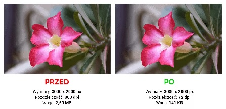

Zapisywanie obrazów na potrzeby witryny internetowej
Optymalizacja plików graficznych:
Redukcja rozmiaru: Dostosuj rozmiar obrazów do wymagań strony internetowej, aby zmniejszyć czas ładowania. Nie używaj większych rozmiarów, niż są potrzebne, i unikaj skalowania obrazów za pomocą kodu HTML/CSS.
Kompresja: Wykorzystaj narzędzia do kompresji obrazów, które zmniejszają rozmiar pliku bez znacznej utraty jakości. Można skorzystać z narzędzi online lub oprogramowania graficznego, które oferuje opcje kompresji.
Dopasowanie jakości: Znajdź równowagę między jakością obrazu a rozmiarem pliku. Dostosuj stopień kompresji, aby utrzymać dobrą jakość przy jak najmniejszym rozmiarze pliku.
Usuwanie nieużywanych metadanych: Przy zapisywaniu plików, usuń nieużywane metadane, takie jak dane EXIF lub dodatkowe informacje, które nie są istotne dla wyświetlania grafiki w przeglądarce.

Wybór formatu pliku:
JPEG: Oferuje skuteczną kompresję plików, ale może prowadzić do utraty jakości przy wysokim stopniu kompresji.
PNG: Zachowuje jakość obrazu bez utraty, co jest szczególnie przydatne dla grafiki z tekstem, logotypów i innych elementów, które wymagają ostrości i przejrzystości.
GIF: Stosowany dla animacji, prostych ilustracji i obrazów z ograniczoną paletą kolorów. GIF obsługuje animacje, ale ma ograniczenia w obszarze kolorów i jakości obrazu.
SVG: Jest formatem wektorowym idealnym dla grafiki, która ma być skalowana bez straty jakości. SVG jest idealny dla grafiki o ostrości, logotypów, ikon i innych elementów, które wymagają elastycznego dostosowywania rozmiaru.